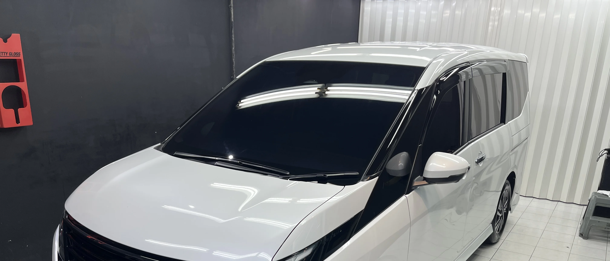
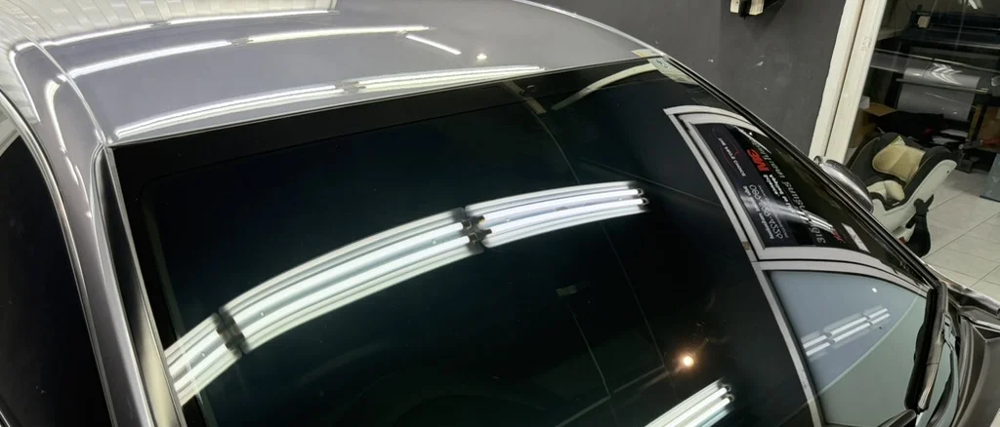
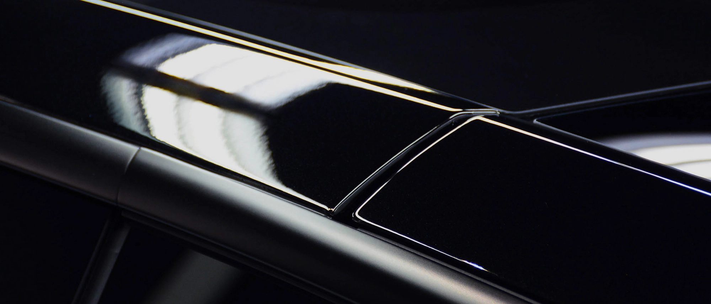
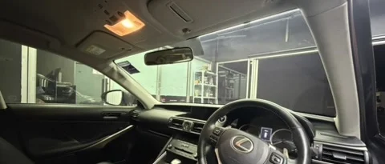

CR20
เหมาะกับผู้ที่ต้องการโทนเข้มขึ้นชัดเจน แต่ยังต้องการอยู่ในกลุ่มฟิล์มระดับสูงของ Crystalline
POSITIONING
3M Crystalline ถูกพัฒนาขึ้นด้วยแนวคิดที่แตกต่างจากฟิล์มทั่วไป คือช่วยจัดการความร้อนจากแสงแดดโดยไม่ต้องพึ่งความเข้มของสีฟิล์มเป็นหลัก
ผลลัพธ์คือฟิล์มที่ให้ภาพรวมดูใส สะอาด และพรีเมียมกว่า ในขณะที่ห้องโดยสารยังรู้สึกสบายขึ้นเมื่อต้องใช้งานกลางวันบ่อย ๆ จึงเหมาะกับผู้ที่ต้องการความสมดุลระหว่างทัศนวิสัย ความสบาย และบุคลิกของรถ

CORE TECHNOLOGY
โครงสร้างฟิล์มหลายชั้นช่วยจัดการพลังงานจากแสงแดดในหลายช่วงความยาวคลื่น แทนการอาศัยความเข้มของฟิล์มเพียงอย่างเดียว
แนวคิดหลักของรุ่นนี้คือให้ห้องโดยสารสบายขึ้น โดยยังรักษาภาพลักษณ์ของรถให้ดูโปร่ง สุภาพ และมองออกได้สบายตา
โครงสร้างฟิล์มไม่ใช้โลหะ จึงเหมาะกับรถยุคใหม่ที่มีระบบอิเล็กทรอนิกส์และสัญญาณต่าง ๆ จำนวนมาก
REAL-WORLD COMFORT
Crystalline เหมาะกับผู้ที่ขับรถกลางวันบ่อย และต้องการให้ห้องโดยสารรู้สึกสบายขึ้นโดยไม่ทำให้รถดูทึบหรือมืดเกินไป
ภาพที่ได้จะยังดูเป็นธรรมชาติ มองเห็นสบาย และในหลายกรณีให้ประสบการณ์ใช้งานที่ผ่อนคลายกว่าแนวฟิล์มเข้มจัด โดยเฉพาะกับรถที่เจ้าของต้องการรักษาภาพลักษณ์แบบเรียบหรู
WHY PEOPLE CHOOSE IT
| เหตุผลในการเลือก | เหมาะกับ Crystalline |
|---|---|
| ต้องการรถโทนใส สุภาพ ไม่ทึบเกินไป | เหมาะมาก |
| ต้องการฟิล์มระดับพรีเมียมของ 3M | เหมาะมาก |
| ขับกลางวันบ่อย อยากได้ความสบายเพิ่มขึ้น | เหมาะ |
| เน้นงบประหยัดเป็นหลัก | อาจมีรุ่นอื่นเหมาะกว่า |
ฟิล์มที่เหมาะที่สุดควรดูร่วมกันทั้งรุ่นรถ ลักษณะการใช้งานจริง และระดับความเข้มที่คุณรับได้
AVAILABLE SHADES

เหมาะกับผู้ที่ต้องการโทนเข้มขึ้นชัดเจน แต่ยังต้องการอยู่ในกลุ่มฟิล์มระดับสูงของ Crystalline

สมดุลระหว่างความสบาย ความใส และการใช้งานจริง เป็นระดับที่เหมาะกับรถจำนวนมาก

เหมาะกับผู้ที่ต้องการความใสสูงมาก และให้ความสำคัญกับภาพลักษณ์ที่สะอาด โปร่ง และ refined
LONG-TERM QUALITY
ผู้ที่เลือกรุ่นนี้มักไม่ได้มองแค่ผลลัพธ์ช่วงแรกหลังติดตั้ง แต่ต้องการวัสดุที่ให้ภาพรวมการใช้งานที่มั่นใจได้ในระยะยาว
Crystalline จึงเป็นตัวเลือกสำหรับคนที่ให้ความสำคัญกับทั้งความสบาย ภาพลักษณ์ และความเชื่อมั่นในคุณภาพของฟิล์มระดับพรีเมียมจากแบรนด์ใหญ่
WHO IT IS FOR
เหมาะกับคนที่ใช้รถจริงทุกวันและอยากให้ประสบการณ์ในห้องโดยสารสบายขึ้นอย่างชัดเจน
เหมาะกับรถที่ต้องการภาพลักษณ์ใส สุภาพ และไม่อยากให้รถดูทึบเกินไป
เหมาะกับคันที่เจ้าของรถให้ความสำคัญกับ detail และบุคลิกของรถในภาพรวม
เหมาะกับคนที่ต้องการเลือกจากแนวคิดของวัสดุและความมั่นใจในแบรนด์ ไม่ใช่แค่เลือกจากความเข้ม
INSTALLATION QUALITY
ฟิล์มระดับนี้จะเห็นความต่างของงานติดตั้งชัด ทั้งเรื่องความเรียบร้อย รายละเอียดขอบฟิล์ม ความสะอาด และภาพรวมหลังส่งมอบ
เราจึงให้ความสำคัญกับการเตรียมพื้นผิว ขั้นตอนการติดตั้ง และการเลือกเฉดที่เหมาะกับรถแต่ละคัน ไม่ใช่เพียงแค่เลือกรุ่นที่ราคาสูงกว่า

MORE ABOUT WINDOW FILM
หากต้องการเปรียบเทียบฟิล์มรุ่นอื่น หรือดูภาพรวมการเลือกฟิล์มกรองแสงของร้าน สามารถกลับไปที่หน้ารวม Window Film ได้
CONSULTATION
แจ้งรุ่นรถ ลักษณะการใช้งาน และโทนที่คุณชอบ เราจะช่วยแนะนำระดับความเข้มและแนวทางที่เหมาะสมให้ก่อนตัดสินใจ
ปรึกษา / นัดหมายติดตั้ง